informationsecurity: authorization: consent
2.0.4 - release
informationsecurity: authorization: consent - Local Development build (v2.0.4) built by the FHIR (HL7® FHIR® Standard) Build Tools. See the Directory of published versions
Källa: Samtycke, tjänstekontraktsbeskrivning version 2.0.4 (tagg 2.0.4, 2025-12-09), TKB_informationsecurity_authorization_consent.docx.
Den nationella arkitekturen för samtyckeshantering är utformad
dels för att stödja vård- och omsorgsutförares behov att hantera samtycken för lokala/regionala vårdsystem
Dels för att möjliggöra en överblick över samtycken för en patient/invånare
dels för motsvarande behov i nationella e-hälsotjänster
Arkitekturen ska medge att vårdgivare/omsorgsutförare, kommuner och regioner, på ett flexibelt sätt kan hantera sina "egna" samtycken, samtidigt som samverkan möjliggörs med nationella e-tjänster som erbjuder direktåtkomst till patients/brukares journaluppgifter. Samtyckesinformation utbyts därför genom tydliga tjänstekontrakt.
Tjänsterna syftar till att ge följande verksamhetsmässiga effekter
Vård- och omsorgspersonalen ska få stöd att på ett enkelt sätt registrera patientens/brukarens samtycke, dess varaktighet och för vem/vilka registreringen gäller.
Vård- och omsorgspersonalen ska kunna åberopa nödsituation när inte samtycke är möjligt att få från patienten/brukaren och det råder fara för patientens/brukarens liv och hälsa.
Samtycken ska kunna få genomslag i anslutna tillämpningar, såväl lokala som nationella, t. ex. både i det egna journalsystemet och i nationell patientöversikt, så att dubbelregistreringar undviks.
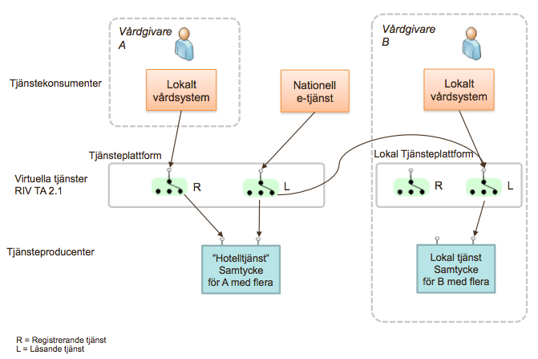
Figur 1: Principer för samverkande tjänster för hantering av samtycke
Notera att en viss instans av samtyckestjänsten typiskt hanterar flera vårdgivares/omsorgsutförares information. För att visa på principerna ges exempel utifrån två fiktiva vårdgivare A och B.
Nationellt anpassade tjänstekontrakt gör att journalsystem kan ansluta till ett och samma gränssnitt för samtycke oavsett hur huvudmannen ordnar med sin hantering och lokala infrastruktur.
Tjänstekontrakten kan realiseras oberoende av var delsystemen realiseras. Man kan således välja att nyttja en mellan huvudmän delad molntjänst ("hotelltjänst"), alternativt en egen lokal installation.
Det är vidare valfritt var användargränssnittet för att registrera samtycket realiseras, i ett separat gränssnitt mot samtyckestjänsten (som i fallet NPÖ) eller i respektive journalsystem/e-tjänst eller i en gemensam portal. Oavsett var sparas samtycket i samtyckestjänsten för aktuell vårdgivare/omsorgsutförare.
Nationella e-tjänster, t ex NPÖ, får genom tjänstekontrakten ett gränssnitt till de samtycken och patientrelationer som behövs för dess hantering av direktåtkomst inom den sammanhållna journalföringen. Eftersom informationen kommer från många olika vårdgivare/omsorgsutförare över regiongränser, behöver tjänsteanropen förmedlas till den instans av samtyckestjänst som är aktuell. Förmedlingen bygger på verksamhetsmässig adressering av anropen enligt RIV TA och T-boken och är huvudsakligen baserad på vård- eller omsorgsgivarens identitet.
Nedanstående flöde och sekvens visualiserar och beskriver användningsfallet att registrera ett samtycke.
Dvs att patienten/brukaren samtycker till att vård- eller omsorgsgivaren kan få åtkomst till information hos andra vård- eller omsorgsgivare.
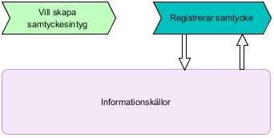
| Namn/beteckning | Beskrivning |
|---|---|
| Användare | En vård- eller omsorgsgivare som har behov av att ta del av journalinformation hos en annan vård- eller omsorgsgivare och därmed behöver patientens/brukarens samtycke till denna åtkomst. Samtycket behöver registreras så att journalsystemet sedan kan se att åtkomsten sker med patientens/brukarens samtycke. |
| Tjänstekonsument | System som registrerar patientens/brukarens samtycke. Kan antingen vara ett lokalt journalsystem eller en samtyckestjänst. |
| Tjänsteproducent | System som lagrar patientens/brukarens samtycke. |
Sekvensdiagram för att registrera patientens/brukarens samtyckesåtkomst i sammanhållen journalföring.
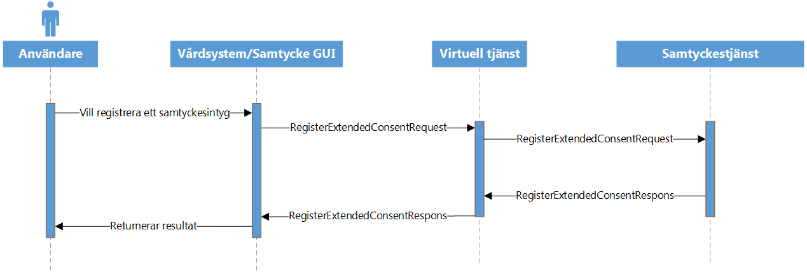
Flöde för att återkalla ett samtycke (avsluta i förtid) i samtyckestjänsten. Intyget raderas inte från samtyckestjänsten utan markeras som avslutat (ej längre giltig) för historikens skull. Ett avslutat samtycke kan ej återtas.
Figuren saknas i källdokumentet (TKB 2.0.4).
| Namn/beteckning | Beskrivning |
|---|---|
| Användare | En vård- eller omsorgsgivare som har behov av att avsluta ett tidigare givet samtycke. Normalt sker detta på begäran av patienten/brukaren. |
| Tjänstekonsument | System som administrerar patientens/brukarens samtycken. Kan antingen vara ett lokalt journalsystem eller en samtyckestjänst. |
| Tjänsteproducent | System som lagrar patientens/brukarens samtycken. |
Sekvensdiagram för att avsluta ett tidigare av patienten/brukaren givet samtycke för åtkomst i sammanhållen journalföring.
Flödet inleds med en läsning av samtycken, för att aktören ska få underlag för vilket samtycke som ska administreras.
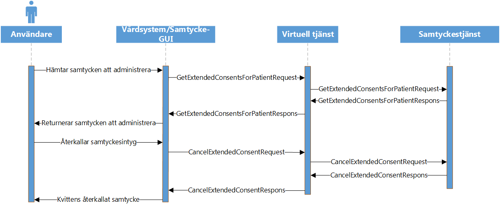
Makulering av samtycke används enbart för borttagning av felregistrerade samtycken från vård- eller omsorgen.
Samtycket raderas inte från samtyckestjänst utan markeras som makulerat (ej längre giltig) för historikens skull. En makulering kan ej återtas. Notera att fram till att samtycket makuleras så är samtycket giltigt och skulle teoretiskt kunna ha nyttjats. En makulering är egentligen ett återtagande av samtycket, så som i flöde 2 men där återtagandets undantagsfall (felregistreringen) dokumenteras särskilt.
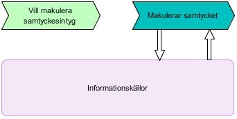
| Namn/beteckning | Beskrivning |
|---|---|
| Användare | En vård- eller omsorgsgivare som har behov av att makulera ett (felaktigt) tidigare registrerat samtycke. |
| Tjänstekonsument | System som begär makulering av patientens/brukarens samtycke. Kan antingen vara ett lokalt journalsystem eller en samtyckestjänst. |
| Tjänsteproducent | System som makulerar patientens/brukarens samtycke. |
Sekvensdiagram för att makulera ett tidigare registrerat samtycke. Orsaken kan t.ex vara en felaktig registrering.
Flödet inleds med en läsning av samtycken, för att aktören ska få underlag för vilket samtycke som ska administreras.
Flöde för att läsa giltiga samtyckesintyg för en viss patient och en viss vård- eller omsorgsgivare med grundinformation.
Med giltiga samtyckesintyg avses de samtyckesintyg, alternativt intyg om nödsituation, som används som underlag vid en kontroll gällande åtkomst (CheckConsents).
Flödet är tänkt att användas i ett integrationsmönster där journalsystemet läser in de giltiga samtycken som finns för patienten/brukaren per vårdgivare, för att sedan utföra intern kontroll av samtycke.
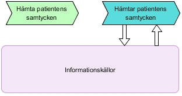
| Namn/beteckning | Beskrivning |
|---|---|
| Tjänstekonsument | System som begär hämtning av patientens/brukarens samtycken för en angiven vårdgivare. |
| Tjänsteproducent | System som tillhandahåller samtycken. |
Sekvensdiagram för att hämta patientens/brukarens samtycken från en producent av samtycken.
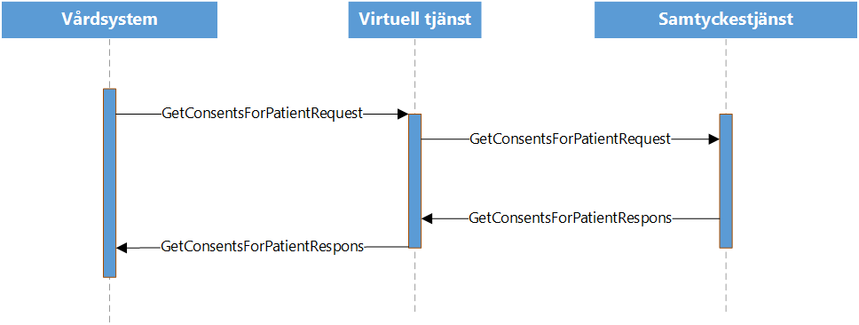
Tjänst som läser alla giltiga samtyckesintyg för en viss vård- eller omsorgsgivare med grundinformation.
Med giltiga samtyckesintyg avses de samtyckesintyg, alternativt intyg om nödsituation, som används som underlag vid en kontroll av åtkomst (CheckConsents).
Flödet användas i ett integrationsmönster där journalsystemet med visst intervall inhämtar alla samtycken det behöver utifrån de vård- eller omsorgsgivare som systemet hanterar information från, för att sedan vid behov utföra intern kontroll mot underlaget av samtycken och nödsituationsintyg.
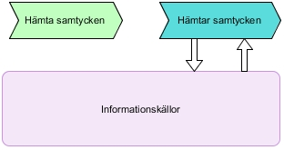
| Namn/beteckning | Beskrivning |
|---|---|
| Tjänstekonsument | System som begär hämtning av samtycken för en angiven vård- eller omsorgsgivare. |
| Tjänsteproducent | System som tillhandahåller samtycken. |
Sekvensdiagram för att hämta patientens/brukarens samtycken från en producent av samtycken.
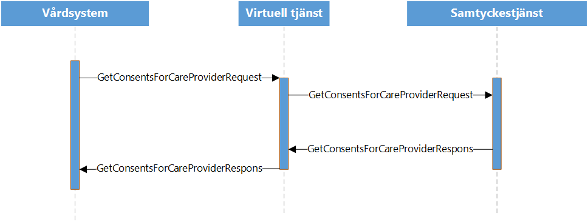
Flöde för att läsa registrerade samtyckesintyg för en viss patient och vård- eller omsorgsgivare med utökad information.
Det är valbart om ogiltiga (makulerade, avslutade och utgångna) samtyckesintyg skall returneras.
Flödet används normalt för att söka fram och administrera patientens/brukarens samtycken för en viss vård- eller omsorgsgivare.
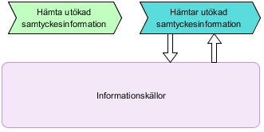
| Namn/beteckning | Beskrivning |
|---|---|
| Användare | En aktör som har behov av att administrera ett samtycke och därmed behöver fullständiga uppgifter kring samtycket. Syftet kan t.ex vara att avsluta ett tidigare registrerat samtycke. |
| Tjänstekonsument | System som begär hämtning av samtycken för en angiven vård- eller omsorgsgivare. |
| Tjänsteproducent | System som tillhandahåller samtycken. |
Sekvensdiagram för att hämta utökad information kring en patientens/brukarens samtycke från en producent av samtycken.
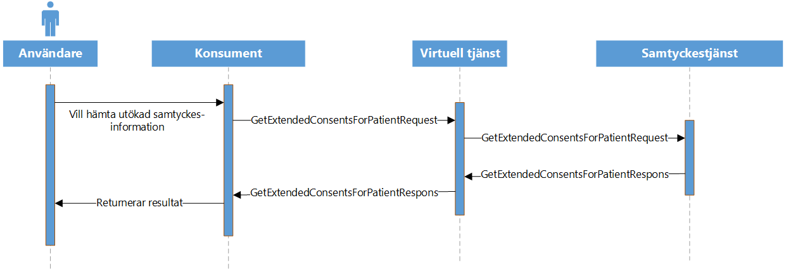
alternativt intyg om nödåtkomst för en given patient och vårdgivare
Flöde för att kontrollera om det finns ett giltigt samtycke, alternativt intyg om nödsituation, gällande åtkomst för viss aktör (vård-/omsorgsenhet eller medarbetare). Med giltigt samtycke avses ett samtycke som fortfarande är giltigt (giltigt t o m har ej passerats), ej makulerat eller avslutat.
Om ett giltigt intyg gällande åtkomst för angiven aktör hittas, kommer tjänsten att svara OK
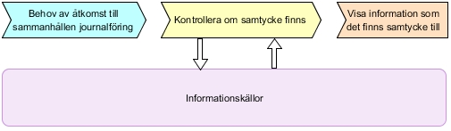
| Namn/beteckning | Beskrivning |
|---|---|
| Användare | En vård- eller omsorgsgivare som har behov av att se journalinformation hos andra vårdgivare |
| Tjänstekonsument | System som ansvarar för att endast visa information som det finns ett samtycke registrerat för hos den aktuella vård- eller omsorgsgivaren. Konsumenten begär kontroll av detta hos en producent av registrerade samtycken. |
| Tjänsteproducent | System som tillhandahåller kontroll av samtycken. |
Sekvensdiagram för att kontrollera om samtycken finns för en given aktör för åtkomst till journalinformation inom sammanhållen journalföring.
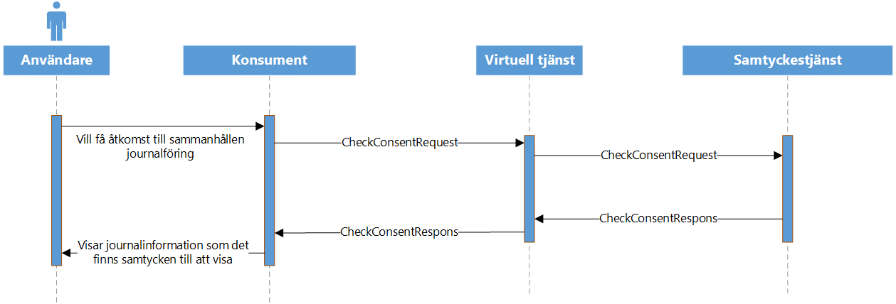
Flöde för att patient/brukare, via en e-tjänst, kunna ta del av alla sina givna samtyckesintyg. Patient/brukare kan se till vilken vård- eller omsorgsutförare som patient/brukare givit samtycke samt samtyckets giltighetstid.
Figuren saknas i källdokumentet (TKB 2.0.4).
| Namn/beteckning | Beskrivning |
|---|---|
| Användare | En patient/brukare som har behov av att se vilka samtycken patienten/brukaren givit och som registrerats av vård- eller omsorgsutförare. |
| Tjänstekonsument | System som ansvarar för att endast visa information om patientens/brukarens registrerade samtycken hos olika vårdenheter/vårdaktörer. |
| Tjänsteproducent | System som tillhandahåller lagring av samtyckesintyg. |
Sekvensdiagram för att kontrollera om samtycken finns för en given aktör för åtkomst till journalinformation inom sammanhållen journalföring.
Flöde för att patient/brukare, via en e-tjänst, ska kunna avsluta ett givet samtycke som patient/brukare tidigare har givit.
Figuren saknas i källdokumentet (TKB 2.0.4).
| Namn/beteckning | Beskrivning |
|---|---|
| Användare | En patient/brukare som har behov av att se vilka samtycken patienten/brukaren givit och som registrerats av vård- eller omsorgsutförare. |
| Tjänstekonsument | System som ansvarar för att visa information om patientens/brukarens registrerade samtycken hos olika vårdenheter/vårdaktörer samt ger patient/brukare möjlighet att avsluta ett samtycke i förtid. |
| Tjänsteproducent | System som tillhandahåller lagring av samtyckesintyg. |
Sekvensdiagram för att kontrollera om samtycken finns för en given aktör för åtkomst till journalinformation inom sammanhållen journalföring.
Figuren saknas i källdokumentet (TKB 2.0.4).
| Tjänstekontrakt | Flöde 1 | Flöde 2 | Flöde 3 | Flöde 4 | Flöde 5 | Flöde 6 | Flöde 7 | Flöde 8 | Flöde 9 |
|---|---|---|---|---|---|---|---|---|---|
| RegisterExtendedConsent | X | ||||||||
| CancelExtendedConsent | X | ||||||||
| DeleteExtendedConsent | X | ||||||||
| GetConsentsForPatient | X | ||||||||
| GetConsentsForCareProvider | X | ||||||||
| GetExtendedConsentsForPatient | X | X | X | ||||||
| CheckConsent | X | ||||||||
| GetAllExtendedConsentsForPatient | X | ||||||||
| EndConsentByPatient | X | X |
Alla tjänster i tjänstegränssnitten följer RIV-TA-profilens standard för logisk adressering. Med logisk adressering ges möjligheten att kunna ange en logisk adress/mottagare i det fall en tjänsteväxel (tjänsteplattform) används. Detta möjliggör att en för avsändaren transparent tjänsteväxel kan förmedla anrop vidare till en viss instans av samtyckestjänsten och även behörighetsstyra anropet.
Alla tjänster har ett obligatoriskt meddelandefält där mottagande vård- eller omsorgsgivares Id (t.ex. HSA-id) skall anges som logisk adressat. För den nationella samtyckestjänsten skall Ineras nationella HSA-id SE165565594230-1000 anges. Denna tjänst representerar en nationell nivå och hanterar alla nationellt kända informationsposter.
Om en regional eller lokal samtyckestjänst etableras ska denna adresseras via logisk adress enligt nedan:
| Tjänst | Logisk adressat |
|---|---|
| Regional samtyckestjänst | Regionens HsaId eller organisationsnummer |
| Lokal samtyckestjänst | Systemets HsaId |
Ej tillämpbart för denna tjänstedomän.